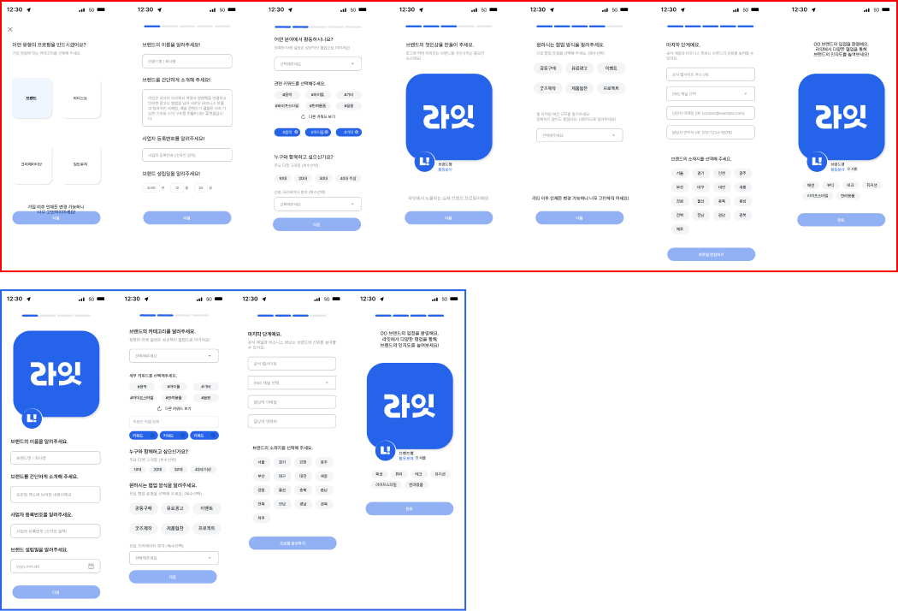
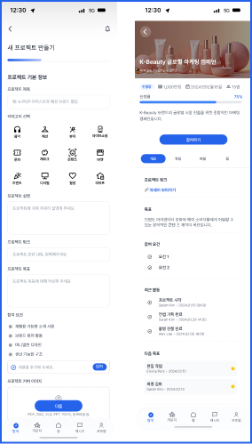

01 GOALS
프로젝트 목표
- 사용자 관점의 서비스 로직 재정립
QA를 통해 초기 기획의 모호함을 제거하고, 전체 서비스 로직의 60%를 사용자 시나리오 중심으로 고도화하여 UX 논리 확보 - 일관성 있는 디자인 시스템 구축
Urban Minimalism 컨셉의 비주얼 가이드를 수립하고, 컴포넌트화를 통해 화면 간 일관성과 제작 효율성 극대화 - 디자인 재현율 100%를 위한 기술적 최적화
React Native 환경에서 직접 스타일 코드를 최적화하여, 디자인 시안과 실제 앱 화면 간의 간극 없는 시각적 완성도 달성
02 DESIGN
KEYWORD
전체적으로 미니멀한 레이아웃과 일관된 브랜드 스타일을 유지하여 빠른 스캔과 효율적인 사용자 경험을 제공하는 디자인임
#미니멀
#모던UI
#심플
COLOR
#2563EB
#B7E2F4
#CDC1FF
#CCE0AC
FONT
국문
프리텐다드
영문
Pretendard
03 publishing

UI/UX 디자인 및 기획
- Figma 기반 모바일 앱 UI/UX 설계 및 디자인 시스템 정의
- 서비스 구조 및 사용자 흐름(User Flow) 설계 참여
- 기능 요구사항 기반 화면 기획 보조 및 와이어프레임 구성
퍼블리싱 및 디자인 구현
- React Native 기반 앱 UI 스타일 가이드 적용 및 디자인 디테일 보완
- 개발 완료 화면에 대한 UI 정합성 검수 및 스타일 수정 작업 수행
- 플랫폼(OS)별 UI 차이 대응 및 일관된 사용자 경험 유지 작업
협업 및 커뮤니케이션
- 기획자–개발자 간 커뮤니케이션 브릿지 역할 수행
- 디자인 의도 전달 및 구현 과정에서 발생하는 이슈 조율
- 개발 진행 중 UI/UX 개선사항 도출 및 피드백 전달
QA 및 품질 관리
- 앱 전반 기능 및 UI QA 수행
- 버그 및 UI 이슈 정의 → 개발자 전달 및 수정 프로세스 관리
- QA 결과 기반 UX 개선 및 완성도 향상 기여
04 problems & solutions
무작정 달리는 속도가 오히려 일정을 늦추고 있지는 않는지
초기 단계에서 명확한 페르소나 정의보다 속도를 우선시하여 타겟 사용자의 기준이 모호해짐.
타겟 부재로 인해 기능 정의와 UX 방향성이 수시로 변경되며 개발 리소스 낭비가 발생함.
사용자 흐름(User Flow)에 대한 체계적인 설계 부족으로 화면 간 이동 구조가 복잡해지고 인터랙션의 일관성이 결여됨.
기획 수정과 디자인 재작업의 빈번한 반복으로 인해 전체적인 프로젝트 개발 일정이 지연되는 결과 초래함.
기획 보조 수행 초기, 사용자 관점에서의 기능 정의 경험 부족으로 실사용 시의 불편 요소를 충분히 예측하지 못함.
-> 타겟 사용자를 구체적으로 재정의하고, 실사용 시나리오를 바탕으로 서비스의 핵심 목적과 방향성을 명확히 확립
-> 단순 기능 나열 방식에서 벗어나 사용자 행동 중심의 플로우를 설계하여 복잡한 동선을 최적화하고 일관성 있는 UX 구축
-> 변경 사항 발생 시 즉각 수정 대신 '기획 기준 문서 업데이트 및 팀 내 공유' 단계를 필수화하여 협업 혼선 방지
-> 사용자 관점에서의 불편 요소를 도출하는 검수 과정을 정례화하고, 이를 디자인과 코드에 실시간으로 반영하는 피드백 루프 생성
-> 각 기능의 개발 목적을 '사용자 가치' 관점에서 재정리하여 팀 전체가 서비스의 본질에 집중할 수 있도록 가이드 제시
가입 단계에서 망설이는 브랜드를 어떻게 붙잡을 수 있을까
브랜드 프로필 생성 과정이 총 5단계로 설계되어 초기 진입 장벽이 매우 높았음.
필수 입력 항목이 과도하게 많아 가입 도중 이탈하는 브랜드 사용자가 다수 발생함.
데이터 분석 결과, 프로필 설정 중간 단계에서 가장 높은 이탈률이 관측되어 서비스 활성화의 저해 요소로 판단됨.
-> 사용자 데이터와 VOC를 기반으로 핵심 정보 위주의 3단계로 프로세스를 전면 개편하여 사용자 피로도 감소
-> 가입 시점에 반드시 필요한 정보가 아닌 경우 '선택 사항'으로 전환하여 즉시 가입을 유도하고,
추후 프로필 편집에서 보완하도록 UX 설계
-> 가입 허들을 낮추기 위해 UI/UX를 간소화하고, 서비스 이용 과정에서 자연스럽게 추가 정보를 입력할 수 있도록 유도
-> UI 디자인 및 프로토타이핑 단계를 거쳐 사용자가 느끼는 심리적 부담을 최소화하고 가입 완료 단계까지의 도달률을 높임

사용자가 프로젝트의 진심을 더 깊게 들여다보게 하려면
프로젝트 생성 단계에서 제공할 수 있는 상세 설명이나 시각적 자료를 담을 공간이 부족하다는 한계 발견함.
텍스트 위주의 구성으로 인해 프로젝트의 매력을 효과적으로 어필하기 어렵고 사용자 체류 시간이 낮게 나타남.
외부 참고 자료를 공유할 때 긴 URL이 원문 그대로 노출되어 전체적인 UI의 심미성을 해치고 가독성을 저하시킴.
제한된 화면 내에서 정보의 우선순위를 설정하는 데 어려움이 발생하여 사용자 경험(UX)의 단절 초래함.
-> 프로젝트 생성
-> 원문 URL을 직접 노출하는 대신 '자세히 보기'나 '참고 자료' 등의 텍스트 링크로 치환하여 심플하고 현대적인 UI 유지
-> 핵심 내용은 앱 내에 배치하고 상세 자료는 링크로 연결하는 '점진적 정보 공개' 방식을 적용하여 사용자의 정보 피로도 감소
-> 링크 클릭 시의 사용자 흐름을 고려하여 외부 연결에 대한 시각적 피드백을 강화하고, Web UI 설계 원칙에 따른 일관된 디자인 적용
-> 브랜드와 아티스트가 자신의 작업물을 더 풍부하게 설명할 수 있는 도구를 제공함으로써 플랫폼 내 협업 성사 가능성 제고

04 result
review
라잇(LYT) 프로젝트는 첫 직무 수행임에도 불구하고 기획 보조부터 UI/UX 디자인, 퍼블리싱 지원까지 전 과정에 주도적으로 참여하며 실무 역량을 빠르게 확장한 경험이었다. 단순히 주어진 업무를 수행하는 수준을 넘어, 서비스의 시작부터 종료까지 전체 흐름을 이해하고 구조적으로 바라볼 수 있는 시각을 확보했다.
UI/UX 디자인을 전담하며 가장 집중했던 부분은 서비스의 정의를 ‘공급자’가 아닌 ‘사용자 관점’에서 재정립한 점이었다. 초기 기획 단계에서 존재했던 모호함을 해소하기 위해 페르소나를 구체화하고 실사용 시나리오를 설계했으며, 이를 통해 디자인이 단순한 시각 요소가 아닌 비즈니스 목표 달성을 위한 전략적 도구임을 체감했다. 또한 이 과정에서 구축한 일관된 디자인 시스템과 최적화된 유저 플로우는 서비스 사용성을 개선하는 핵심 요소로 작용했다.
개발팀과의 협업 과정에서는 기술적 제약을 고려한 디자인 의사결정과 논리적 커뮤니케이션 역량을 강화했다. 구현 가능성을 사전에 고려하여 대안을 제시하고, 개발 효율성과 디자인 완성도를 동시에 만족시키는 방향으로 협업을 진행했다. 그 결과 개발자 관점에 대한 이해도가 높아졌으며, 커뮤니케이션 비용을 줄이고 협업 효율을 향상시키는 성과를 도출했다.
특히 리액트 네이티브 기반 웹앱 개발 과정에 직접 참여하여 디자인 수정 및 퍼블리싱을 병행한 경험은 기술적 이해도를 크게 향상시킨 계기가 되었다. 디자인이 실제 코드로 구현되는 과정을 경험하면서, 단순히 시각적으로 완성된 결과물이 아닌 구현 가능성과 확장성을 고려한 디자인 설계 역량을 확보했다.
결과적으로 이번 프로젝트는 기획, 디자인, 개발을 아우르는 통합적 사고를 기반으로 실무 역량을 확장한 전환점이었으며, 향후 다양한 환경에서도 빠르게 적응하고 기여할 수 있는 기반을 마련한 경험이었다.
WEB APP React Native
LYT
라잇은 아티스트와 브랜드를 잇는 다이렉트 콜라보레이션 플랫폼.
팀 프로젝트 (기획 1, 디자인 1, 개발 1)